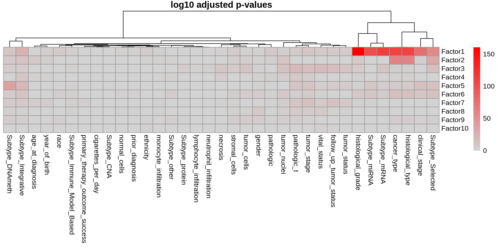
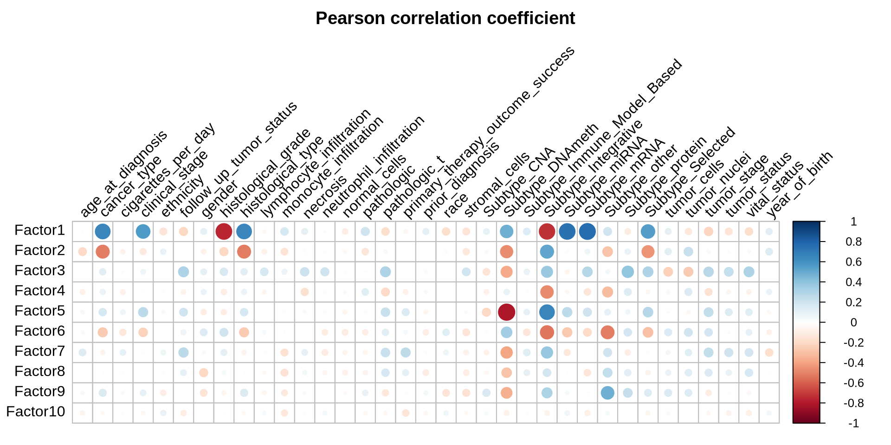
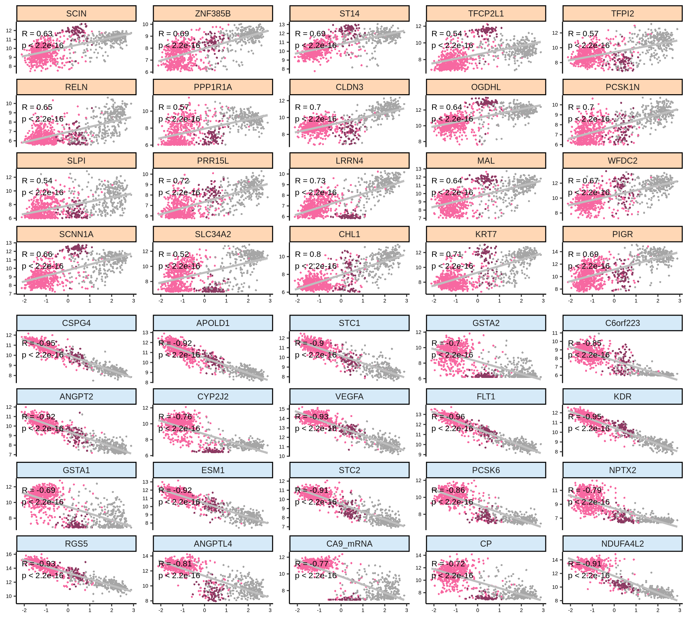
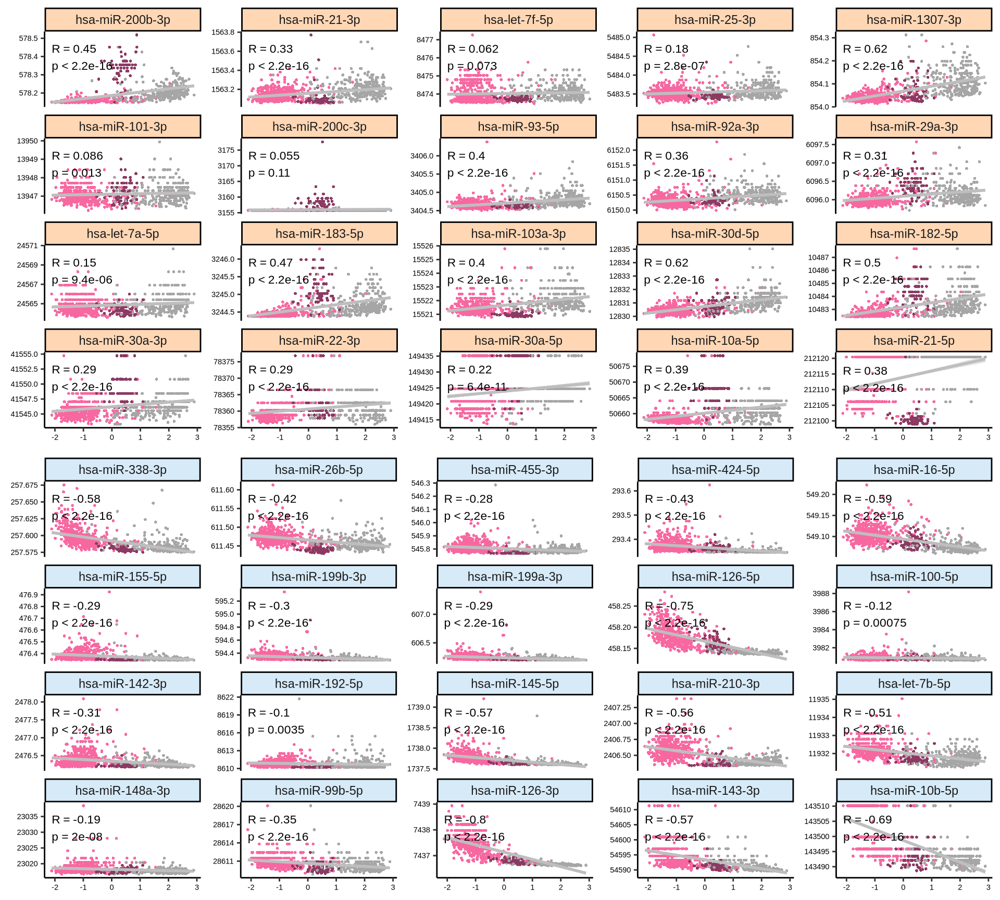
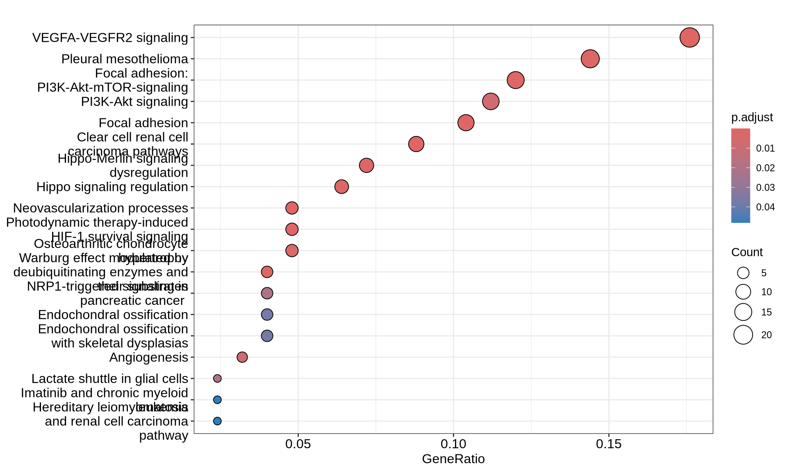
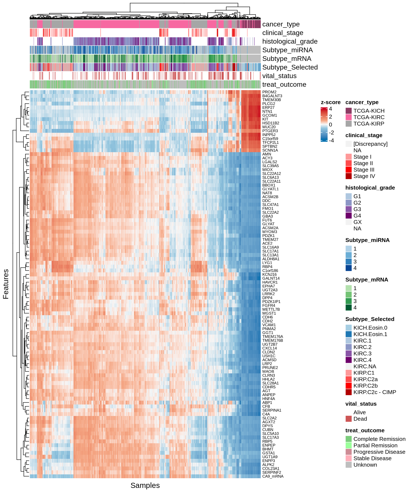
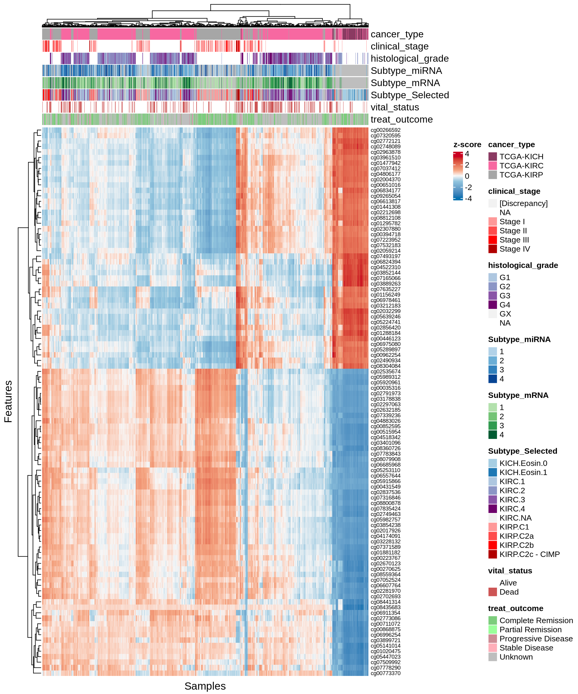
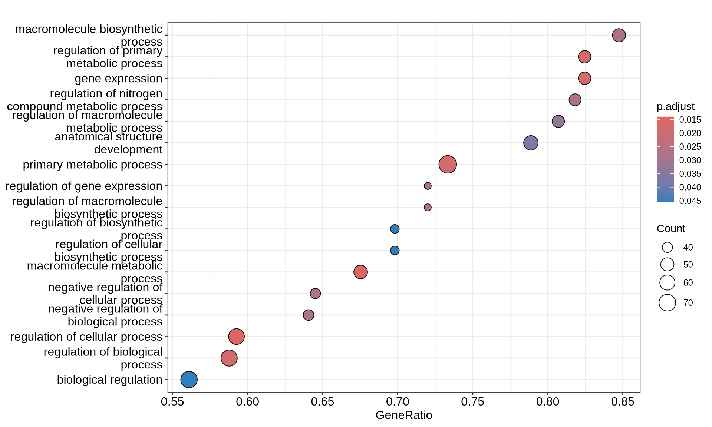

6 Factor Analysis
6.1 On this page
Biological insights and take-home messages are at the bottom of the page at section Lesson Learnt: Section 6.3.
- Here…
6.2 Multi-Omics Factor Analysis
6.2.1 data prep
Here we leverage and integrate all the omics layers that we have analysed independently in the previous chapters, including:
- transcriptomics
- estimated infiltrating immune cells
- proteomics
- micro-RNAs
- Copy Number Variants
Despite the preprocessing, to compare this multiomics readouts on different scales we need to rescale and normalize each table
may want to ignore this one
6.2.2 run prediction
model prediction outcomes



6.2.3 Factor 1: KIRC vs KIRP






dd
6.2.3.1 Multi-omics interaction network
GET top molecules

Gather OmniPath and STRINGdb
OmniPath can serve multiple kinds of interactions, based on the quality of the interactors or the interactions themselves:
- post_translational i.e. physical interactions of proteins, protein-protein interactions (or PPIs)
- transcriptional i.e. gene regulatory interactions
- post_transcriptional i.e. miRNA-mRNA interactions
- mirna_transcriptional i.e. transcriptional regulation of miRNA genes
LIST ALL INTERACTIONS
get_intercell_resources()
## [1] "Adhesome" "Almen2009" "Baccin2019"
## [4] "CellCellInteractions" "CellPhoneDB" "ComPPI"
## [7] "CSPA" "DGIdb" "EMBRACE"
## [10] "GO_Intercell" "GPCRdb" "Guide2Pharma"
## [13] "HGNC" "HPA_secretome" "HPMR"
## [16] "ICELLNET" "Integrins" "iTALK"
## [19] "Kirouac2010" "LOCATE" "LRdb"
## [22] "Matrisome" "MatrixDB" "MCAM"
## [25] "Membranome" "OmniPath" "OPM"
## [28] "Phobius" "Ramilowski_location" "Ramilowski2015"
## [31] "SignaLink_function" "Surfaceome" "TopDB"
## [34] "UniProt_keyword" "UniProt_location" "UniProt_topology"
## [37] "Zhong2015"Let’s build the network now
plot my network


Let’s build a wider network
MUST FIND A WAY TO SIMPLIFY NETWORK IF NO INTERACTION BETWEEN SIGNIFICANT IN MORE THAN 1 STEP
6.2.3.2 Pathway analysis
prep gene list
Little GO relevant terms
Some KEGG pathways, with very low gene coverage (false positive)
some Reactome pathways, but with low coverage (max 10% of genes covered)
The network we have built may reflect new interactions.

Wikipathways

6.2.4 Factor 2: KICH






daadadad
6.2.4.1 Multi-omics interaction network
GET top molecules

Let’s build the network now
plot my network


ss
6.2.4.2 Pathway analysis
prep gene list
Some relevant biological processes

No KEGG pathways
No reactome (generatio <= 10%)

Wikipathways

saassaas
6.2.5 Factor 3: Higher Hazard Ratio





daadadad
6.2.5.1 Multi-omics interaction network
GET top molecules

Let’s build the network now
plot my network


ss
6.2.5.2 Pathway analysis
prep gene list
Some relevant biological processes

No KEGG pathways
No reactome (generatio <= 10%)

Wikipathways

wuwuwuwuwuwuwuwwuwuwuwuwuwuwu
6.2.6 Enrichments comparisons
lets compare the KIRC vs KIRP and KICH gene lists
prep gene lists


6.3 Lessons Learnt
[[[[PROPER DESCRIPTION OF FINDINGS AND TRANSCRIPTOMICS ENRICHMENTS]]]]
So far, we have learnt:
- A